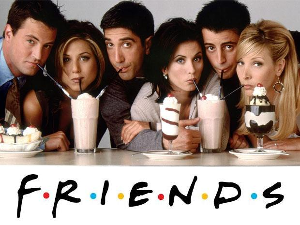
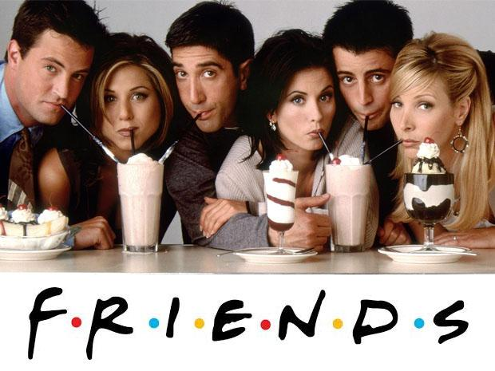

Welcome to My Personal Information Page
Mustafayev Farhad

fmustafayev15678@ada.edu.az


 

My name is Farhad.I am 17 years old. I am a freshman of IT Engineering. Some of my favorite things to do are reading,listening to music, playing retro video games and watching TV series. These are activities that I enjoy immensely and indulge in daily.My career aspirations are to become an IT programmer. I have been told that I am a charming, kind, silent, and clever person with "oddities". I look up mostly to my family members, especially my parents, as a guiding figures in my life. Favorite shows of mine include Scrubs,Friends,The Big Bang, and How i met your mother. Just a few things about yours truly participant:)
Ahmad Rajabli,18A